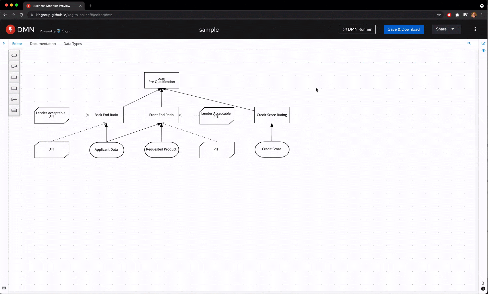
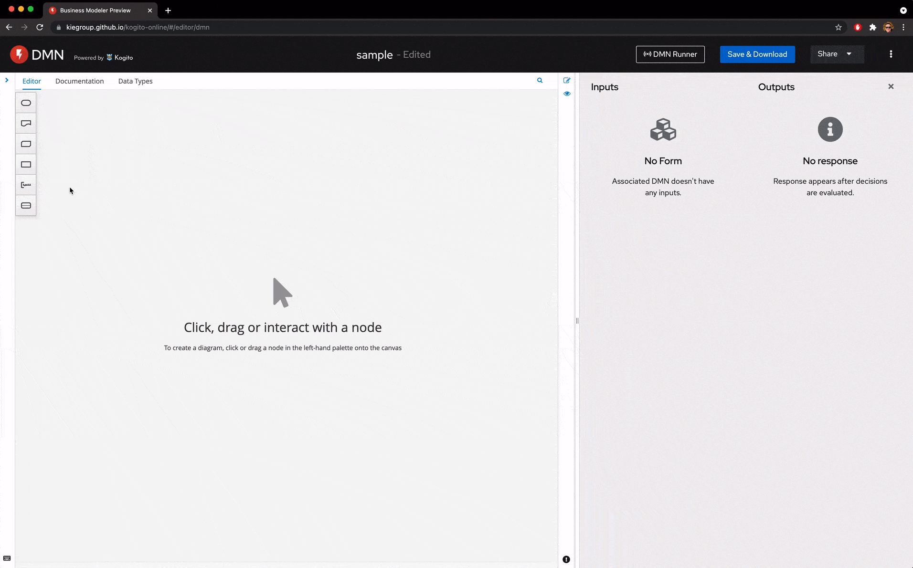
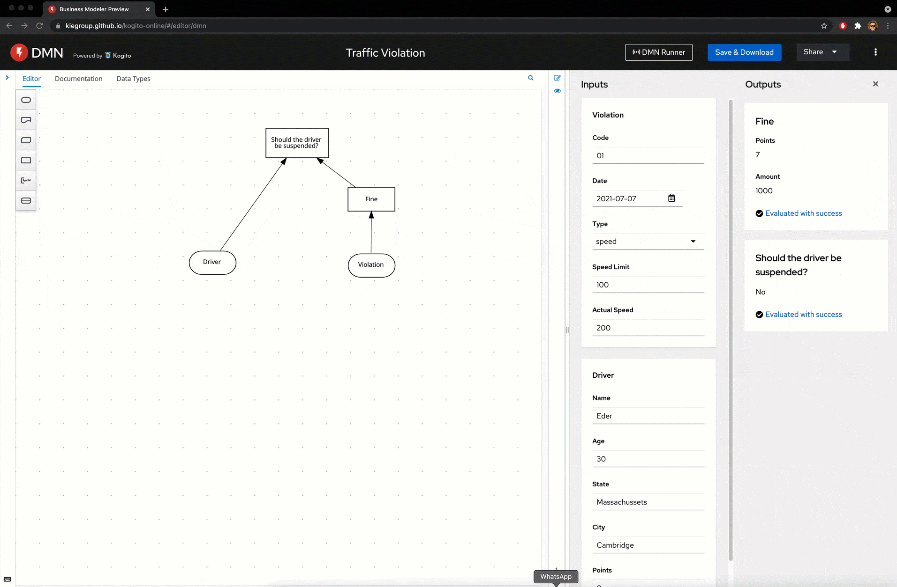
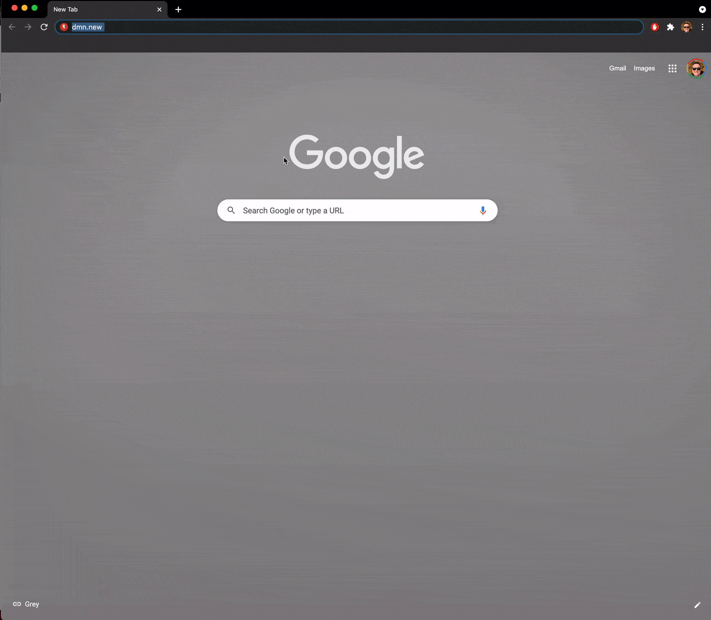

Instantaneous Feedback Loop for DMN Authoring with DMN Runner
We’ve been exploring ways to augment the developer experience for our editors on the KIE Tooling team. Today, I’m proud to announce the release of our DMN Runner on dmn.new. We hope it will transform your DMN Authoring experience. Let’s see it in action:

Instantaneous Feedback Loop
An essential piece of a seamless authoring experience is an instantaneous feedback loop. A feedback loop on asset authoring happens when some portion of or all asset input is captured, analyzed, and used to provide insight to improve a future users’ authoring experience.
Providing such instantaneous feedback is crucial to a fluid authoring experience. But what does this mean for DMN authoring?
Automatic Form Generation
On every change of your DMN model, the DMN runner introspects it and automatically generates the input form for your DMN execution. The data that you input on it will be later used on the execution loop.

Automatic DMN evaluation
As soon as the DMN runner is connected to your dmn.new session, on every change of your DMN model, we will combine your DMN model and your form input and evaluate it on the DMN Engine.
The awesome part of this workflow is that it is really fast, looking almost instantaneous. See it in action:

Automatic DMN validation
Another cool feature of DMN Runner is that together with DMN evaluation, we also validate your DMN models. Take a look at it:

How to start to use it?
It’s super simple. Go to dmn.new and click on the ‘DMN Runner’ button and follow our wizard.

The DMN runner is part of the KIE Tooling Extended Services Desktop application, and we provide binaries for all the platforms.
After installing, dmn.new will automatically connect to your local environment and augment it, providing a much more fluid experience for your authoring!

{kind=link}
{kind=link}
{kind=link}
{kind=link}